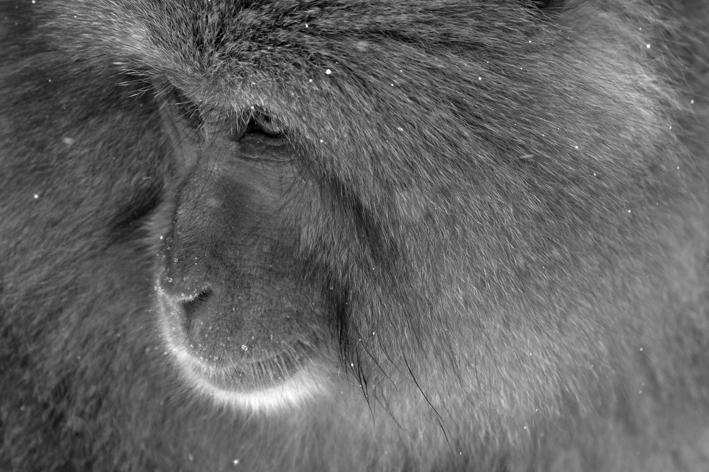
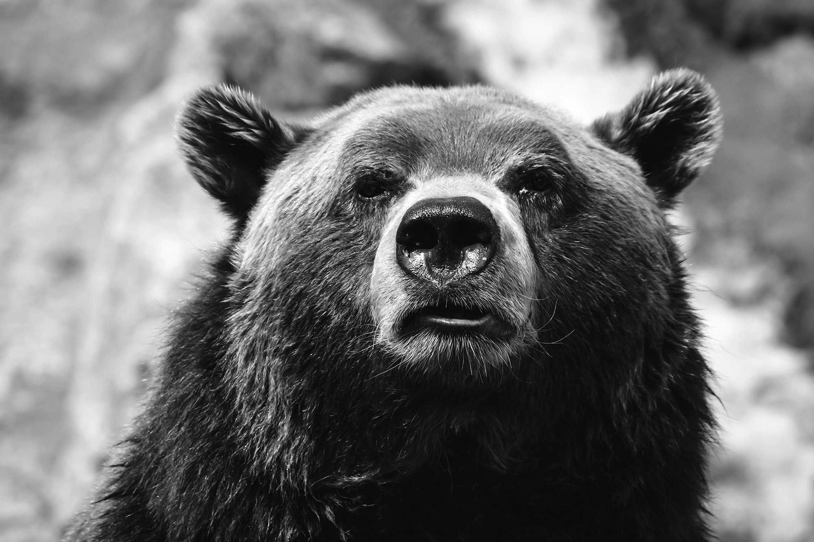
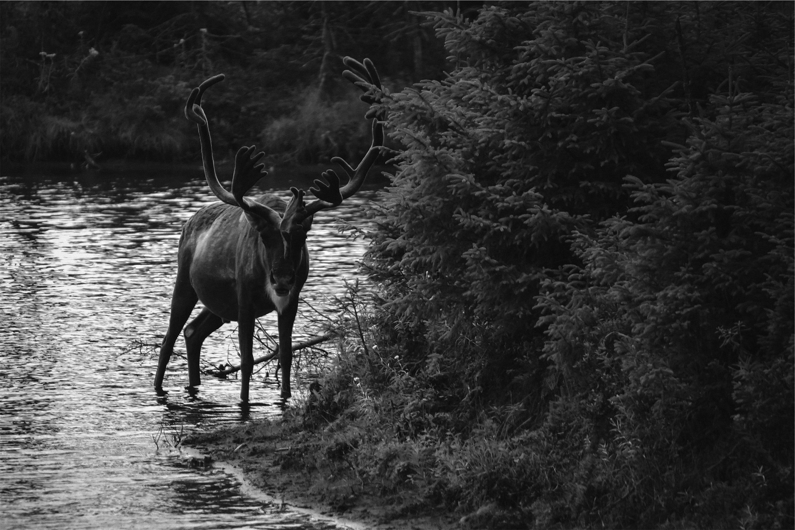
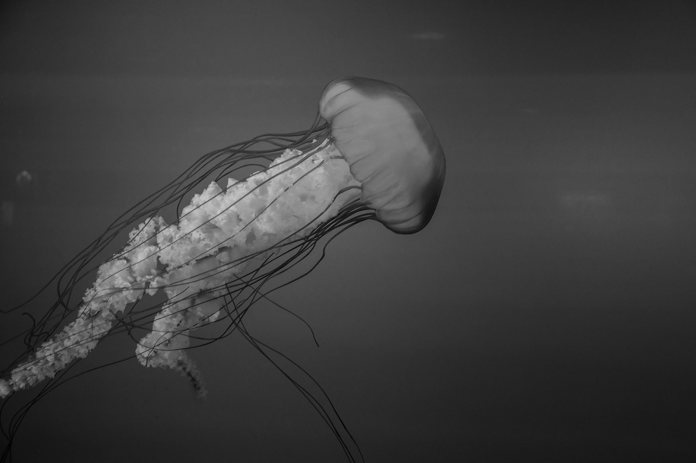

Animals!
No image optimization
Monkey
From Wikipedia, the free encyclopedia

Monkey is a common name that may refer to groups or species of mammals, in part, the simians of infraorder Simiiformes. The term is applied descriptively to groups of primates, such as families of New World monkeys and Old World monkeys. Many monkey species are tree-dwelling (arboreal), although there are species that live primarily on the ground, such as baboons. Most species are also active during the day (diurnal). Monkeys are generally considered to be intelligent, especially the Old World monkeys of Catarrhini.
Read More...
Bulldog
From Wikipedia, the free encyclopedia
The Bulldog, also known as the English Bulldog or British Bulldog, is a medium-sized dog breed. It is a muscular, hefty dog with a wrinkled face and a distinctive pushed-in nose.[6] The Kennel Club (UK), the American Kennel Club (US), and the United Kennel Club (US) oversee breeding records. Bulldogs are popular pets; they were the fifth most popular purebreed in the US in 2017 according to the American Kennel Club.
Read More...
Bear
From Wikipedia, the free encyclopedia

Bears are carnivoran mammals of the family Ursidae. They are classified as caniforms, or doglike carnivorans. Although only eight species of bears are extant, they are widespread, appearing in a wide variety of habitats throughout the Northern Hemisphere and partially in the Southern Hemisphere. Bears are found on the continents of North America, South America, Europe, and Asia. Common characteristics of modern bears include large bodies with stocky legs, long snouts, small rounded ears, shaggy hair, plantigrade paws with five nonretractile claws, and short tails.
Read More...
Husky
From Wikipedia, the free encyclopedia

A husky is a sled dog used in the polar regions. One can differentiate huskies from other dog types by their fast pulling-style. They represent an ever-changing crossbreed of the fastest dogs (the Alaskan Malamute, by contrast, pulled heavier loads at a slower speed). Humans use huskies in sled-dog racing. Various companies have marketed tourist treks with dog sledges for adventure travelers in snow regions. Huskies are also kept as pets, and groups work to find new pet homes for retired racing and adventure-trekking dogs
Read More...
Moose
From Wikipedia, the free encyclopedia

The moose (North America) or elk (Eurasia), Alces alces, is a member of the New World deer subfamily and is the largest and heaviest extant species in the deer family. Most adult male moose have distinctive broad, palmate ("open-hand shaped") antlers; most other members of the deer family have antlers with a dendritic ("twig-like") configuration. Moose typically inhabit boreal forests and temperate broadleaf and mixed forests of the Northern Hemisphere in temperate to subarctic climates. Hunting and other human activities have caused a reduction in the size of the moose's range over time. It has been reintroduced to some of its former habitats. Currently, most moose occur in Canada, Alaska, New England (with Maine having the most of the lower 48 states), Fennoscandia, the Baltic states, and Russia. Its diet consists of both terrestrial and aquatic vegetation. The most common moose predators are the gray wolf along with bears and humans. Unlike most other deer species, moose do not form herds and are solitary animals, aside from calves who remain with their mother until the cow begins estrus (typically at 18 months after birth of the calf), at which point the cow chases away young bulls. Although generally slow-moving and sedentary, moose can become aggressive and move quickly if angered or startled. Their mating season in the autumn features energetic fights between males competing for a female.
Read More...
Jellyfish
From Wikipedia, the free encyclopedia

Jellyfish and sea jellies are the informal common names given to the medusa-phase of certain gelatinous members of the subphylum Medusozoa, a major part of the phylum Cnidaria. Jellyfish are mainly free-swimming marine animals with umbrella-shaped bells and trailing tentacles, although a few are not mobile, being anchored to the seabed by stalks. The bell can pulsate to provide propulsion and highly efficient locomotion. The tentacles are armed with stinging cells and may be used to capture prey and defend against predators. Jellyfish have a complex life cycle; the medusa is normally the sexual phase, which produces planula larva that disperse widely and enter a sedentary polyp phase before reaching sexual maturity.
Read More...